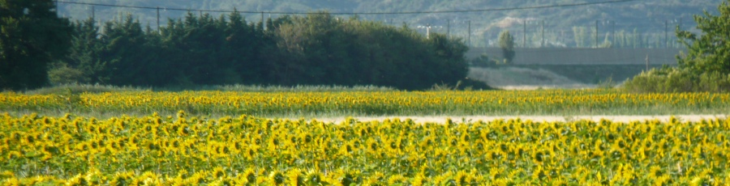
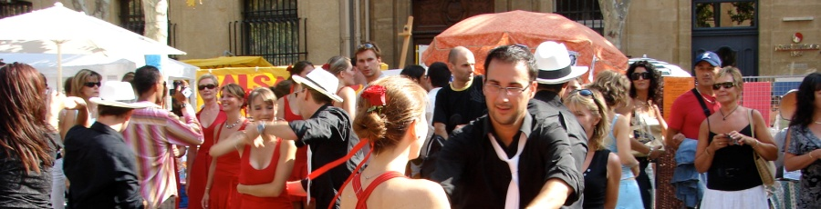
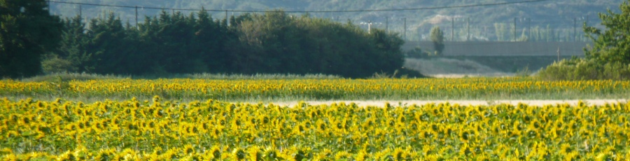
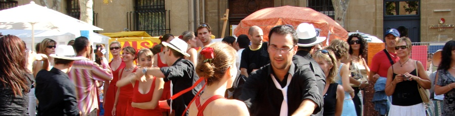

Créons des ponts entre les cultures


Les merveilles de la...
 




La France demeure un des plus ancien pays au monde et elle est marquée par un enrichissement culturel, linguistique, et historique de l’ordre de plus élévé. Connu pour ses magnifiques sites historiques, gastronomie, haute couture, paysage aussi variés que ses traditions, et sa proéminence dans les beaux arts, ce pays détient sans fin de possibilités pour sa découverte.
POINTS D’INTÉRÊTS CULTURELS DU VOYAGE:
Découverte du Palais des Papes et le Pont d’Avignon en « jeu de piste ».
La visite des Baux-de-Provence, le château des Baux et les Carrières de lumière.
Une journée à Nîmes, surnommé la « Rome française » et ses remarquables vestiges tels que les Arènes, la maison Carrée, ou encore la tour Magne.
Visite de la Camargue avec un arrêt dans une manade pour démonstration de tri de taureaux.
Une expérience unique de la vie quotidienne dans un village typique du sud de la France.
ACTIVITÉS ET ATELIERS:
Un bateau de croisière sur le Rhône, descente des Gorges de la Cèze en canoë, combat de gladiateurs et de l'accrobranche. Des ateliers de parfum, pâtisserie, et ateliers du monde Romain dans un parc historique aux choix de: forge, lampes à huile, armement, écriture, théâtre, archéologie ou sports olympiques.
LOGEMENT ET CUISINE:
Nous vous assurons une expérience exceptionnelle en cuisine locale de qualité, et des hébergements ainsi que des gîtes, auberges de jeunesse, et hôtels qui sont choisis soigneusement pour votre confort.
Séjour à Paris: Le musée du Louvre est le plus grand musée de Paris par sa surface et l’un des plus importants au monde. La Tour Eiffel, tour de fer de 324 mètres de hauteur construite par Gustave Eiffel à l’occasion de l’Exposition Universelle de 1889 (montée au 2ième étage). Balade d’une heure en bateau mouche sur la Seine: laissez-vous guider au coeur du Paris historique et découvrez la beauté des rives de la Seine classé par l’UNESCO.
Séjour en Normandie: La crête de Vimy, site et lieu de la bataille au cours de la Première guerre mondiale dominant la plaine de Lens. Visite du port de Dieppe lieu du débarquement des troupes canadiens en France occupée, menée le 19 août 1942. Le château de Versailles, site de la résidence des rois de France Louis XIV, XV, et XVI.